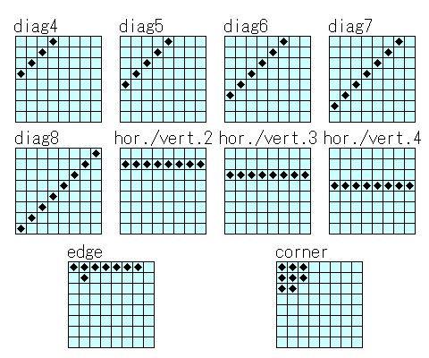

| 3.2 パターンによる局面評価 |
局面を評価するには様々な方法があります。
本解説では多くの強いプログラムで採用されているパターンに基づく評価について説明します。
パターンに基づく評価とは、局面からパターンを抽出し、各パターンの評価値の和をその局面の評価値とするものです。
本解説で使用するパターンは以下のようになっています。
各パターンでは黒い四角で印がついているマスを使用します。
これらのパターンを採用している理由は以下の通りです。

例として、"hor./ver.4"パターンの評価方法を説明します。
このパターンでは、A4からH4までの連続する８マスを抽出します。
このパターンは８個のマスを含み、各マスは３つの状態（黒、白、空き）を持つので、
対称性を考慮しなければパターン全体では6561（３の８乗）の状態があります。
各状態に対する評価値を6561個の配列として用意することで、パターンの評価を行うことができます。
"hor./ver.4"パターンでは、これを90度回転、180度回転、270度回転させたパターンについても評価を行います。
他のパターンの評価も同様に行います。
パターンに基づく評価の利点は、高速であることです。
各パターンの状態（パターンインデックスと呼ぶことにします）は以下の式を使えば簡単に計算できます。
ただしB[XX]はXXの状態に応じて以下を返すものとします。
空き：0、黒：1、白：2
例："hor./ver.4"パターンの計算式
((((((B[A4]*3+B[B4])*3+B[C4])*3+B[D4])*3+B[E4])*3+B[F4])*3+B[G4])*3+B[H4]
パターンに基づく評価の難しいところは、各パターンの評価値を決定する点です。
各パターンの状態数の和は数万になります。
それらに対して１つ１つ評価値をつけるのは大変な作業です。
この問題を解決するために各パターンの評価値づけを自動的に行う方法があるのですが、それについては後で述べます。